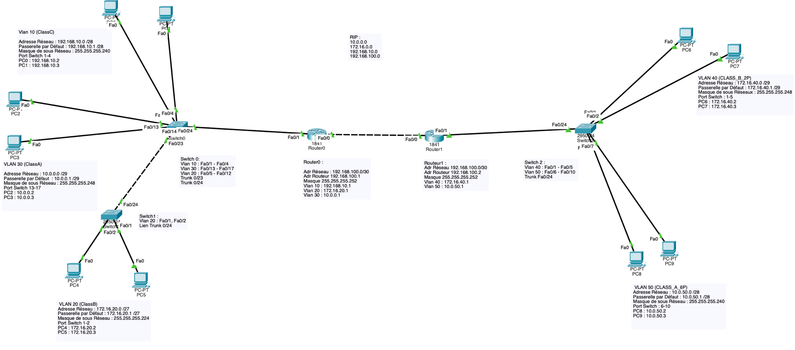

Mise en place de VLAN sur Cisco Packet Tracer
Réalisation en formation — F04Contexte
Dans le cadre des travaux pratiques réseau du BTS SIO, j'ai utilisé Cisco Packet Tracer pour simuler la configuration de VLANs (Virtual Local Area Networks). Les VLANs permettent de segmenter un réseau physique en plusieurs réseaux logiques distincts, améliorant la sécurité et les performances de l'infrastructure.
Objectifs
- Comprendre le concept de segmentation réseau par VLAN
- Configurer des VLANs sur des switches Cisco
- Associer des ports aux VLANs (access ports)
- Configurer les ports trunk entre les switches
- Tester l'isolation et la communication inter-VLAN
Technologies utilisées
Cisco Packet Tracer
VLAN
Switch Cisco
IOS CLI
Simulation réalisée entièrement dans Cisco Packet Tracer avec des équipements Cisco virtuels.
Notions abordées
- Définition et création de VLANs (VLAN ID, nom)
- Modes de port : Access et Trunk
- Protocole 802.1Q (encapsulation VLAN)
- Routage inter-VLAN (router-on-a-stick)
- Commandes IOS :
vlan,switchport,trunk
Réalisations
- Conception d'une topologie réseau avec plusieurs VLANs
- Création et nommage des VLANs (ex. VLAN 10 : RH, VLAN 20 : IT)
- Configuration des ports access et trunk
- Tests de communication : isolement entre VLANs vérifié
- Mise en place du routage inter-VLAN via un routeur
Compétences acquises
- Maîtrise des bases de l'administration réseau Cisco
- Compréhension de la segmentation réseau logique
- Utilisation de la CLI Cisco IOS
- Lecture et interprétation de topologies réseau
- Dépannage de configurations réseau
Topologie réseau — TP Cisco Packet Tracer
